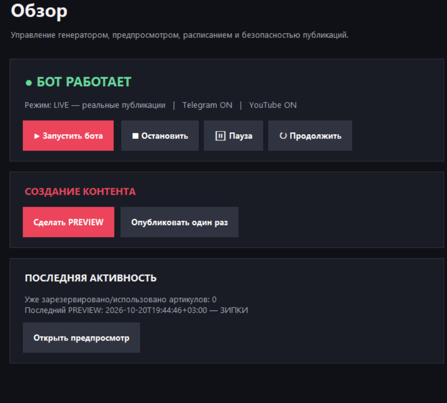

Curate product collections
Organize clothing and accessory products into focused category-based showcases, review product information and filter unsuitable results.
WB SHOP BY Uploader (Creator Studio) is a desktop application for selecting product showcases, creating vertical videos, previewing the final result, and managing optional publishing to connected social accounts.
Development-stage desktop software. Not affiliated with TikTok, Wildberries, YouTube, Instagram, or Telegram.
The desktop application brings product discovery, video generation and publishing controls into one workspace. Availability of particular platform actions depends on account authorization and platform approval.
Organize clothing and accessory products into focused category-based showcases, review product information and filter unsuitable results.
Choose the number of products, video length, visual theme and soundtrack, with a generated video preview before posting.
Preview generated MP4 files and review product images and details before enabling any social platform publishing workflows.
Connect supported accounts through their official authorization procedures. Never enter social account passwords on this website.
Where permissions are available, upload a selected video to a connected platform, monitor status and inspect errors.
Use a Windows GUI for settings, previews, scheduling and logs. User credentials and local configuration are not submitted to this site.
The application operates on the user's Windows computer. The public website is informational and does not initiate account connections or video uploads.
Configure product preferences and prepare a focused set of items.
Set duration, layout and music; generate a vertical MP4.
Open the output and check visuals, captions and details.
Use approved account permissions and platform-specific publishing flows.
The application includes an overview with generation actions and status indicators, along with dedicated sections for videos, product selection, publishing, accounts, tools and logs.

This website is a public description of the desktop application. It contains no OAuth login form, no upload endpoint and no advertising tracker. Account integrations take place inside the local application and through official third-party APIs.
No. Never paste API keys, passwords or access tokens into this website, public issues or support messages.
TikTok integrations depend on the granted scopes, your authorization, platform rules and the review status of the developer application. Public posting is not guaranteed.
Visit the developer's GitHub profile. Please do not include secrets or personal identifiers in public messages.
Read the public Terms of Service and Privacy Policy before using the application.
Development status: the desktop application is under active development. Documentation and supported integrations may change. This website is informational and does not imply TikTok developer approval.